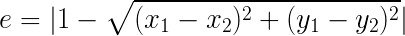
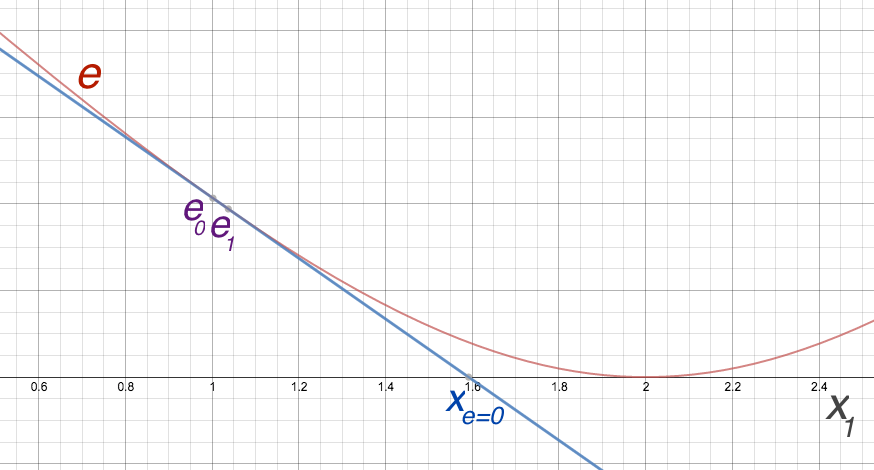

In 1961, before personal computers existed, Ivan Sutherland built a computer program called Sketchpad. It was the first in many things: first graphical user interface (GUI), first time an oscilloscope was modified to be used as a computer monitor as we know it now, first gesture UI using a light pen, first computer drawing system, and so on. Still, to a casual observer it appears to be a CAD drawing tool, something like the great-great grandpa of AutoCAD. But programming languages pioneer Alan Kay points out some other important categories it is a first in, not commonly recognized. It happens to be really the first object oriented system, as well as first fully declarative programming system. That is, the user defines behavior for a drawing by simply expressing its constraints (requirements) (e.g. two line sections must be parallel) and the system will automatically and continually solves the system of constraints to ensure they are maintained at all times. Listen to Kay's video commentary here to get a better idea:
Sadly, from what I've seen 1961 Sketchpad happens to be not only the first truly declarative programming system (albeit a limited and not really extensible one), but also one of the last ones! Alan Borning's ThingLab of late 70s generalized it by packaging it as a constraint-based "kit building kit," programmable within the Smalltalk environment. (By the way, check out this cool revival of ThingLab in the browser.)
Yet serious projects seem to have stopped there, although other forms of declarative programming and constraint-based programming came about in later years. Language researchers have also tried various forms of mixing declarative, constraint-based programming with the common imperative style programming. In either case, I haven't seen any form of declarative programming system that can handle the realm of software development of today. The majority of developers have never heard of declarative programming, let alone use it in their practice.
An important innovation of Sketchpad was to employ an iterative numerical constraint solving approach called relaxation to let the system automatically maintain the constraints required by the user (thus making it a declarative programming system). Sketchpad uses it along with a linear approximation method as a relatively light-weight scheme to solve for a given system of numeric constraints, including non-linear ones.
Relaxation in Sketchpad involves considering each variable in turn and changing its value to better satisfy the constraints. The process continues to iterate until the system converges. Here is how Alan Borning explained the process:
"Constraints are expressed in terms of error functions returning a number indicating how far the state is from satisfying the constraint. For each variable, all constraints acting on it are approximated as linear equations. A least-squares fit is performed. To approximate the constraint as a linear equation, the variable is changed by some small delta, and the new error is computed; the coefficient in the linear equation is then given by the ratio of the change in the error over the delta."
Because the system can, in many situations, smoothly and quickly converge to an acceptable solution, this form of constraint solving can be suitable for interactiveness and animation, as shown by Sketchpad and Borning's ThingLab. Sketchpad's relaxation method did not employ any domain specific knowledge in solving a system of constraints: only a general iterative linear approximation method.
To illustrate the approach, consider the single constraint that the distance between two points p(x1,y1) and q(x2,y2) must be maintained at 1. Also assume the current values are p(1,1) and q(2,2). Thus the error value (e) is given as:
Now if we plot this error as a function of the first variable, say x1, where all other variables are fixed at their current values, we obtain the red graph in the figure below. We get the current error value e0 based on the current value of x1, i.e., 1. As the linear approximation of the red graph, we tweak x1 by a small amount, say 0.01 and obtain the new error e1. The two points give us the linear approximate blue line below:
Now we can use x1's value where the line crosses the x-axis (zero error) as an approximation for what should x1 be changed to in order to minimize the error associated with this constraint. We then repeat this process by moving on to the other three variables (y1, x2, and x2) involved in the constraint and then wrapping around back to the first variable.
Often, however, multiple constraints refer to variables, not just one. Sketchpad's relaxation method simply uses the sum of squares for the error values of all constraints involving each variable, instead of the single error function as in our example above.
Because, doing all this makes the approximation less and less accurate, almost always a single iteration of the process above doesn't move the system to a satisfactory (small overall error) state. However, the hope is that the system has moved a little closer to a final solution, and thus repeating this process over and over ("relaxation") will eventually lead to a place where all constraints are satisfied enough.
In his paper published in the 90s "30 Years After Sketchpad: Relaxation of Geometric Constraints Revisited," C.W.A.M. van Overveld reworked Sketchpad's original relaxation solving model for a small set of geometric constraints, e.g., one that maintains the distance between two points constant.
Rather than using a general linear-approximation based numeric method to solve constraints, Overveld proposed to let each type of constraint to define its own algorithm to solve itself, in isolation. The algorithm is a function that returns a set of deltas (the amount to change) for the variables it needs to update. For a better chance of convergence, the solution needs to be one that minimizes the sum of squares for the error functions of all constraints. Differentiation is done to find a solution that is minimizing. The difference here, in contrast to Sketchpad, is that the user must perform this to come up with such algorithm separately for each constraint type.
Take our previous example constraint that maintains the length between two points p(x1,y1) and q(x2,y2) fixed at 1. Here is the algorithm to solve the
// delta fn for LengthConstraint:
function computeDeltas() {
var deltaMagnitude = (distance(this.p, this.q) - this.l) / 2
var delta = scaledBy(normalized(minus(this.q, this.p)), deltaMagnitude)
return {p: delta, q: scaledBy(delta, -1)}
}
Note how the function chooses to split the delta evenly between the two points (move them equally in opposite directions) as a solution that minimizes the squared sums.
To make things interesting let us assume there is a second constraint acting on p(x1,y1), which says it should be fixed at the origin coordinates o(0,0). The
// delta fn for CoordinateConstraint:
function computeDeltas() {
var delta = minus(this.c, this.p)
return {p: delta}
}
That is, the delta is simply the vector obtained from subtracting the target position from the current position of the point.
Once the deltas from all individual constraints, in this case the two above, are collected, they are averaged (actually Overveld's approach uses the less sensible choice of summing) together, the average is damped (divided by a constant) for better convergence chances, and then applied to the variables. In a solution-converging situation, the system moves closer to a solution by this pass and therefore by iteratively repeating this process an acceptable global solution (minuscule overall error value) can be reached quite quickly on modern computers.
To be concrete, given the variables in our example p(x1,y1) and q(x2,y2) and the current state of x1 = 1, y1 = 1, x2 = 2, x1 = 2, deltas obtained from the two constraints are:
// deltas from LengthConstraint:
p = (1, 1)
q = (2, 2)
l = 1
deltaMagnitude = (distance((1, 1), (2, 2) - 1)) / 2 = 0.20710678118654757
delta = scaledBy(normalized(minus((2, 2), (1,1))), 0.20710678118654757)
= scaledBy((0.7071067811865475, 0.7071067811865475), 0.20710678118654757)
= (0.14644660940672627, 0.14644660940672627)
delta.x1 = 0.14644660940672627
delta.y1 = 0.14644660940672627
delta.x2 = -0.14644660940672627
delta.x2 = -0.14644660940672627
// deltas from CoordinateConstraint:
p = (1, 1)
c = (0, 0)
delta = minus((0, 0), (1, 1)) = (-1, -1)
delta.x1 = -1
delta.y1 = -1
// averaging and damping (1/4 scaling) deltas per variable:
delta.x1 = -0.10669417382
delta.y1 = -0.10669417382
delta.x2 = -0.03661165235
delta.x2 = -0.03661165235
// applying the deltas to current values:
x1 = 1 + delta.x1 = 0.89330582618
y1 = 1 + delta.y1 = 0.89330582618
x2 = 2 + delta.x2 = 1.96338834765
y2 = 2 + delta.y2 = 1.96338834765
}
We compute the new error values from the two constraints and verify that the total error has been reduced. If the process above is repeated numerous times, eventually both constraints will get to a place of negligible error and the system is considered to have converged to a solution. Here is a visualization of the iterative process:
Overveld relaxation approach |
Notice that one difference between Sketchpad and Overveld approaches is that Sketchpad iterates the process variable by variable, thus different constraints see different states, whereas in Overveld all constraints see the same start state to compute the deltas. The latter setup seems more sane.
From one point of view Overveld's approach is inferior to Sketchpad's: the system has no real smarts in solving problems; the user has to provide an algorithm that solves each constraint type beforehand.
What we noticed, however, is that Overveld's approach of delegating the responsibility for solving the individual constraint types from the system to the constraints themselves has a much higher chance of being extended to general programming. In the next part we will introduce our new declarative programming model inspired from Overveld's approach.
Read Part II: Constraint Reactive Programming (CRP) in Sketchpad14
Back to Table of Contents